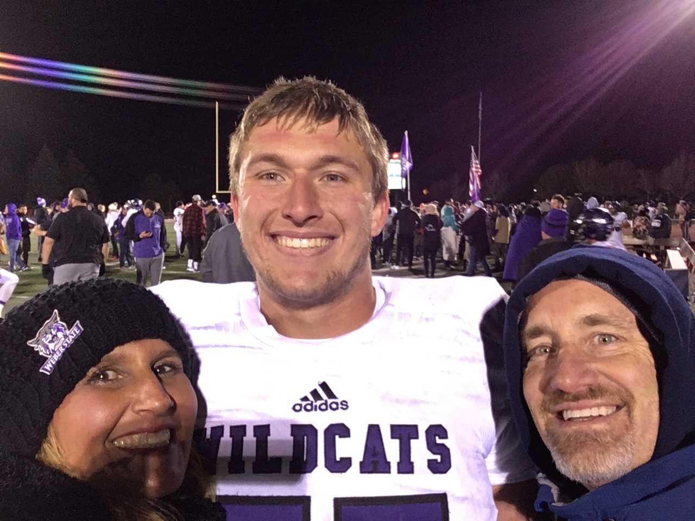
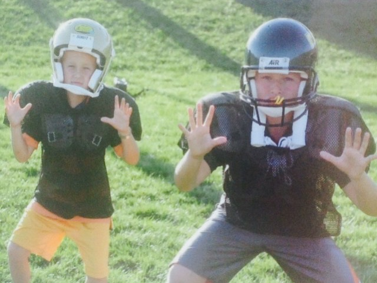
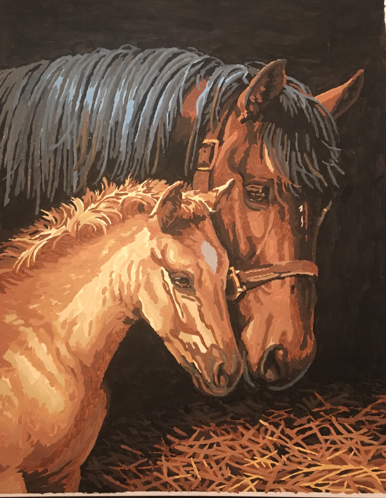

Family has been arguably the most important aspect of my life. My parents have made countless sacrifices and look out for me all the time. My older brother has served as a mentor and an inspiration to chase success as a student-athlete. My sister, though autistic, has taught me a lot about compassion, patience, enjoying life in the present. Overall, some of my fondest family memories have happened during the major holidays of thanksgiving and christmas at our formal dinner table. After joyful and restful days spending time together, we would always take the time to enjoy a nice meal and make memories together. Still today, my family remains one of the most important foundations of my life.

My earliest memory as an athlete was playing pop-warner youth football in Temecula. The sky was powder blue, crab-grass laid under our feet, and my first football coach, coach Yoder, was teaching us the very basics of flag football. My father considered sports an important activity for us kids because it taught us lessons about hard work, and helped us develop social skills. My brother and I both played football, baseball, and basketball throughout our childhood growing up but naturally we both felt called to the game of football. Our bodies began developing and as we both turned out to be six foot four, we adopted football as our exclusive sport and began focusing on getting stronger and more technically sound. Ultimately, the good memories I have playing football, the lessons it has taught me about selflessness and hard work, as well as the excellent opportunities the game has brought about for me are the reasons I love football and have dedicated so much of my life towards it.
My father has always been a man of many interests and as such passed many of them down to my brother and me. On designated weekends my dad, brother, and I would discuss planned philosophical topics; this activity is one that I thoroughly enjoyed and plan on finding ways to continue. Since my parents never allowed us kids to play video games as kids we had to find other ways to entertain ourselves; my two hobbies became art and reading. Art has always been a relaxing activity; I also find it very fulfilling to imagine what I want to create and then to produce it on a canvas. Reading is something I like doing for personal intellectual growth and increasing my understanding of other people’s perspectives. Depending on what genre I am reading I also enjoy the development and intricacies of how authors create lasting and meaningful stories. In general, my hobbies are part of what has shaped my professional goals and have contributed to who I am as a person.

Growing up, I spent a lot of time around the medical field just by sitting around in my parent’s office, helping with simple jobs like packing gauze or drawing water syringes. My dad works as a private practice surgeon and my mom works with him as a registered nurse. Once I grew to an age where my parents felt I should start thinking about my career and life goals, my dad allowed me to observe one of his surgeries. I tied my gown, covered my face with a surgical mask, and scrubbed in as my dad was preparing to operate on an already sedated patient. He started off by telling me what he was picturing; he said, “Surgery, especially in the mouth is like art because the aesthetic is important. So, like an artist, you have to start with a finished product in mind and plan an approach for executing that finished product.” He explained everything as he went and moved efficiently, with steady hands. This experience watching my dad in the OR combined with my natural love of math, science, and art, shaped my aspiration to become a surgeon, like my father. Since I decided on this career goal, I have committed to the hard work of preparing myself for college and in the long run making myself competitive for entrance into medical school.
https://bwhitworth01.github.io/Bradley-s-Week-3-Blog/